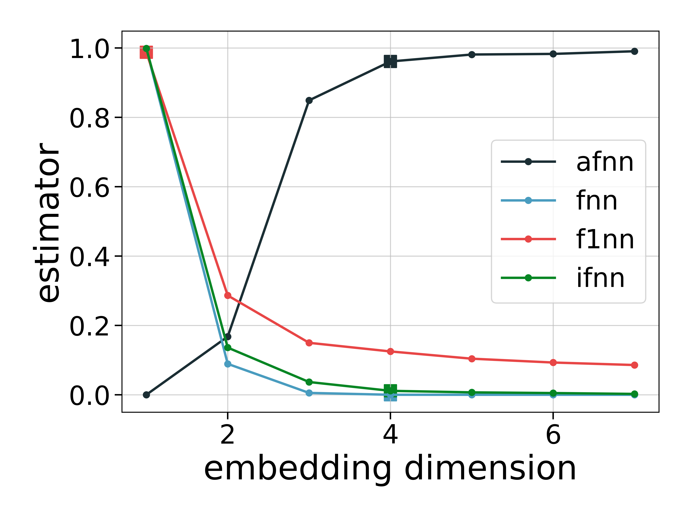

Traditional Optimal Embedding
This page discusses and provides algorithms for estimating optimal parameters to do Delay Coordinates Embedding (DCE) with.
The approaches can be grouped into two schools:
- Traditional, where one tries to find the best value for a delay time
τand then an optimal embedding dimensiond. - Unified, where at the same time an optimal combination of
τ, dis found, and is discussed in the Unified Optimal Embedding page.
The independent approach is something "old school", while recent scientific research has shifted almost exclusively to unified approaches.
Optimal delay time
DelayEmbeddings.estimate_delay — Functionestimate_delay(s, method::String [, τs = 1:100]; kwargs...) -> τEstimate an optimal delay to be used in embed. The method can be one of the following:
"ac_zero": first delay at which the auto-correlation function becomes <0."ac_min": delay of first minimum of the auto-correlation function."mi_min": delay of first minimum of mutual information ofswith itself (shifted for variousτs). Keywordsnbins, binwidthare propagated intoselfmutualinfo."exp_decay":exponential_decay_fitof the correlation function rounded to an integer (uses least squares onc(t) = exp(-t/τ)to findτ)."exp_extrema": same as above but the exponential fit is done to the absolute value of the local extrema of the correlation function.
Both the mutual information and correlation function (autocor) are computed only for delays τs. This means that the min methods can never return the first value of τs!
The method mi_min is significantly more accurate than the others and also returns good results for most timeseries. It is however the slowest method (but still quite fast!).
DelayEmbeddings.exponential_decay_fit — Functionexponential_decay_fit(x, y, weight = :equal) -> τPerform a least square fit of the form y = exp(-x/τ) and return τ. Taken from: http://mathworld.wolfram.com/LeastSquaresFittingExponential.html. Assumes equal lengths of x, y and that y ≥ 0.
To use the method that gives more weight to small values of y, use weight = :small.
Self Mutual Information
DelayEmbeddings.selfmutualinfo — Functionselfmutualinfo(s, τs; kwargs...) → mCalculate the mutual information between the time series s and itself delayed by τ points for τ ∈ τs, using an improvement of the method outlined by Fraser & Swinney in[Fraser1986].
Description
The joint space of s and its τ-delayed image (sτ) is partitioned as a rectangular grid, and the mutual information is computed from the joint and marginal frequencies of s and sτ in the grid as defined in [1]. The mutual information values are returned in a vector m of the same length as τs.
If any of the optional keyword parameters is given, the grid will be a homogeneous partition of the space where s and sτ are defined. The margins of that partition will be divided in a number of bins equal to nbins, such that the width of each bin will be binwidth, and the range of nonzero values of s will be in the centre. If only of those two parameters is given, the other will be automatically calculated to adjust the size of the grid to the area where s and sτ are nonzero.
If no parameter is given, the space will be partitioned by a recursive bisection algorithm based on the method given in [1].
Notice that the recursive method of [1] evaluates the joint frequencies of s and sτ in each cell resulting from a partition, and stops when the data points are uniformly distributed across the sub-partitions of the following levels. For performance and stability reasons, the automatic partition method implemented in this function is only used to divide the axes of the grid, using the marginal frequencies of s.
Notice that mutual information between two different timeseries x, y exists in JuliaDynamics as well, but in the package TransferEntropy.jl. It is also trivial to define it yourself using genentropy by doing
function mutualinfo(x, y, est; base = 2, α = 1)
X = genentropy(Dataset(x), est; base = base, α = α)
Y = genentropy(Dataset(y), est; base = base, α = α)
XY = genentropy(Dataset(x, y), est; base = base, α = α)
return X + Y - XY
endOptimal embedding dimension
DelayEmbeddings.optimal_traditional_de — Functionoptimal_traditional_de(s, method = "afnn", dmethod = "mi_min"; kwargs...) → 𝒟, τ, EProduce an optimal delay embedding 𝒟 of the given timeseries s by using the traditional approach of first finding an optimal (and constant) delay time using estimate_delay with the given dmethod, and then an optimal embedding dimension, by calculating an appropriate statistic for each dimension d ∈ 1:dmax. Return the embedding 𝒟, the optimal delay time τ (the optimal embedding dimension d is just size(𝒟, 2)) and the actual statistic E used to estimate optimal d.
Notice that E is a function of the embedding dimension, which ranges from 1 to dmax.
For calculating E to estimate the dimension we use the given method which can be:
"afnn"(default) is Cao's "Averaged False Nearest Neighbors" method[Cao1997], which gives a ratio of distances between nearest neighbors."ifnn"is the "Improved False Nearest Neighbors" from Hegger & Kantz[Hegger1999], which gives the fraction of false nearest neighbors."fnn"is Kennel's "False Nearest Neighbors" method[Kennel1992], which gives the number of points that cease to be "nearest neighbors" when the dimension increases."f1nn"is Krakovská's "False First Nearest Neighbors" method[Krakovská2015], which gives the ratio of pairs of points that cease to be "nearest neighbors" when the dimension increases.
For more details, see individual methods: delay_afnn, delay_ifnn, delay_fnn, delay_f1nn. The special keywords `` denote for which possible embedding dimensions should the statistics be computed for.
While this method is automated if you want to be really sure of the results, you should directly calculate the statistic and plot its values versus the dimensions.
Keywords
The keywords
τs = 1:100, dmax = 10denote which delay times and embedding dimensions ds ∈ 1:dmax to consider when calculating optimal embedding. All remaining keywords are propagated to the low level functions:
fnn_thres::Real = 0.05, slope_thres::Real= 0.2, w::Int=1,
rtol=10.0, atol=2.0, τs = 1:100, metric = Euclidean(), r::Real=2.0,
stoch_thres = 0.1Description
We estimate the optimal embedding dimension based on the given delay time gained from dmethod as follows: For Cao's method the optimal dimension is reached, when the slope of the E₁-statistic (output from "afnn") falls below the threshold slope_thres (default is .05) and the according stochastic test turns out to be false, i.e. if the E₂-statistic's first value is < 1 - stoch_thres.
For all the other methods we return the optimal embedding dimension when the corresponding FNN-statistic (output from "ifnn", "fnn" or "f1nn") falls below the fnn-threshold fnn_thres (Default is .05) AND the slope of the statistic falls below the threshold slope_thres. Note that with noise contaminated time series, one might need to adjust fnn_thres according to the noise level.
See also the file test/compare_different_dimension_estimations.jl for a comparison.
DelayEmbeddings.delay_afnn — Functiondelay_afnn(s::AbstractVector, τ:Int, ds = 2:6; metric=Euclidean(), w = 0) → E₁Compute the parameter E₁ of Cao's "averaged false nearest neighbors" method for determining the minimum embedding dimension of the time series s, with a sequence of τ-delayed temporal neighbors.
Description
Given the scalar timeseries s and the embedding delay τ compute the values of E₁ for each embedding dimension d ∈ ds, according to Cao's Method (eq. 3 of[Cao1997]).
This quantity is a ratio of the averaged distances between the nearest neighbors of the reconstructed time series, which quantifies the increment of those distances when the embedding dimension changes from d to d+1.
Return the vector of all computed E₁s. To estimate a good value for d from this, find d for which the value E₁ saturates at some value around 1.
Note: This method does not work for datasets with perfectly periodic signals.
w is the Theiler window.
See also: optimal_traditional_de and stochastic_indicator.
DelayEmbeddings.delay_ifnn — Functiondelay_ifnn(s::Vector, τ::Int, ds = 1:10; kwargs...) → `FNNs`Compute and return the FNNs-statistic for the time series s and a uniform time delay τ and embedding dimensions ds after [Hegger1999]. In this notation γ ∈ γs = d-1, if d is the embedding dimension. This fraction tends to 0 when the optimal embedding dimension with an appropriate lag is reached.
Keywords
*r = 2: Obligatory threshold, which determines the maximum tolerable spreading of trajectories in the reconstruction space. *metric = Euclidean: The norm used for distance computations. *w = 1 = The Theiler window.
See also: optimal_traditional_de.
DelayEmbeddings.delay_fnn — Functiondelay_fnn(s::AbstractVector, τ:Int, ds = 2:6; rtol=10.0, atol=2.0) → FNNsCalculate the number of "false nearest neighbors" (FNNs) of the datasets created from s with embed(s, d, τ) for d ∈ ds.
Description
Given a dataset made by embed(s, d, τ) the "false nearest neighbors" (FNN) are the pairs of points that are nearest to each other at dimension d, but are separated at dimension d+1. Kennel's criteria for detecting FNN are based on a threshold for the relative increment of the distance between the nearest neighbors (rtol, eq. 4 in[Kennel1992]), and another threshold for the ratio between the increased distance and the "size of the attractor" (atol, eq. 5 in[Kennel1992]). These thresholds are given as keyword arguments.
The returned value is a vector with the number of FNN for each γ ∈ γs. The optimal value for γ is found at the point where the number of FNN approaches zero.
See also: optimal_traditional_de.
DelayEmbeddings.delay_f1nn — Functiondelay_f1nn(s::AbstractVector, τ::Int, ds = 2:6, metric = Euclidean())Calculate the ratio of "false first nearest neighbors" (FFNN) of the datasets created from s with embed(s, d, τ) for d ∈ ds.
Description
Given a dataset made by embed(s, d, τ) the "false first nearest neighbors" (FFNN) are the pairs of points that are nearest to each other at dimension d that cease to be nearest neighbors at dimension d+1.
The returned value is a vector with the ratio between the number of FFNN and the number of points in the dataset for each d ∈ ds. The optimal value for d is found at the point where this ratio approaches zero.
See also: optimal_traditional_de.
DelayEmbeddings.stochastic_indicator — Functionstochastic_indicator(s::AbstractVector, τ:Int, ds = 2:5) -> E₂sCompute an estimator for apparent randomness in a delay embedding with ds dimensions.
Description
Given the scalar timeseries s and the embedding delay τ compute the values of E₂ for each d ∈ ds, according to Cao's Method (eq. 5 of [Cao1997]).
Use this function to confirm that the input signal is not random and validate the results of estimate_dimension. In the case of random signals, it should be E₂ ≈ 1 ∀ d.
Example
using DynamicalSystems, PyPlot
ds = Systems.roessler()
# This trajectory is a chaotic attractor with fractal dim ≈ 2
# therefore the set needs at least embedding dimension of 3
tr = trajectory(ds, 1000.0; dt = 0.05)
x = tr[:, 1]
dmax = 7
fig = figure()
for (i, method) in enumerate(["afnn", "fnn", "f1nn", "ifnn"])
# Plot statistic used to estimate optimal embedding
# as well as the automated output embedding
𝒟, τ, E = optimal_traditional_de(x, method; dmax)
plot(1:dmax, E; label = method, marker = "o", ms = 5, color = "C$(i-1)")
optimal_d = size(𝒟, 2)
scatter(optimal_d, E[optimal_d]; marker = "s", s = 100, color = "C$(i-1)")
end
legend(); xlabel("embedding dimension")
ylabel("estimator")
tight_layout()Algorithm stopped due to convergence of E₁-statistic. Valid embedding achieved ✓. Algorithm stopped due to sufficiently small FNNs. Valid embedding achieved ✓. Sufficiently small FNNs NOT reached. Valid embedding NOT achieved ⨉. Algorithm stopped due to sufficiently small FNNs. Valid embedding achieved ✓.

- Fraser1986Fraser A.M. & Swinney H.L. "Independent coordinates for strange attractors from mutual information" Phys. Rev. A 33(2), 1986, 1134:1140.
- Cao1997Liangyue Cao, Physica D, pp. 43-50 (1997)
- Kennel1992M. Kennel et al., Phys. Review A 45(6), (1992).
- Krakovská2015Anna Krakovská et al., J. Complex Sys. 932750 (2015)
- Hegger1999Hegger & Kantz, Improved false nearest neighbor method to detect determinism in time series data. Physical Review E 60, 4970.